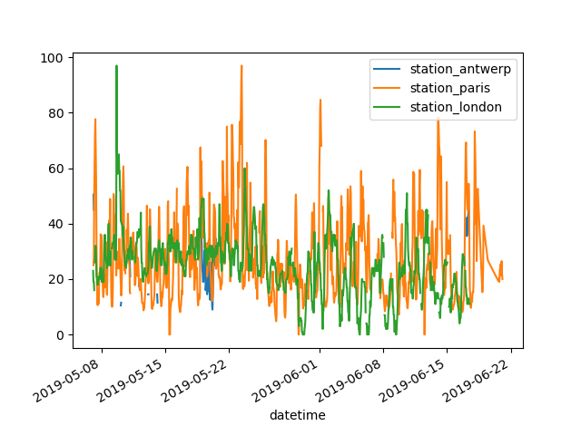
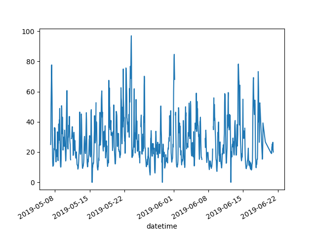
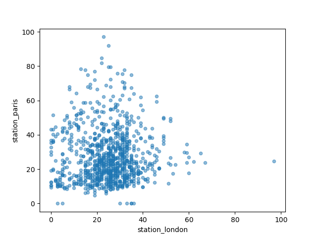
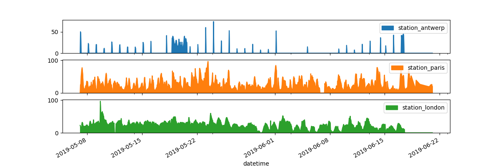
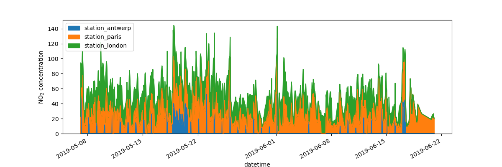

How do I create plots in pandas?#

In [1]: import pandas as pd
In [2]: import matplotlib.pyplot as plt
- Air quality data
For this tutorial, air quality data about \(NO_2\) is used, made available by OpenAQ and using the py-openaq package. The
To raw dataair_quality_no2.csvdata set provides \(NO_2\) values for the measurement stations FR04014, BETR801 and London Westminster in respectively Paris, Antwerp and London.In [3]: air_quality = pd.read_csv("data/air_quality_no2.csv", index_col=0, parse_dates=True) In [4]: air_quality.head() Out[4]: station_antwerp station_paris station_london datetime 2019-05-07 02:00:00 NaN NaN 23.0 2019-05-07 03:00:00 50.5 25.0 19.0 2019-05-07 04:00:00 45.0 27.7 19.0 2019-05-07 05:00:00 NaN 50.4 16.0 2019-05-07 06:00:00 NaN 61.9 NaN
Note
The usage of the
index_colandparse_datesparameters of theread_csvfunction to define the first (0th) column as index of the resultingDataFrameand convert the dates in the column toTimestampobjects, respectively.
I want a quick visual check of the data.
In [5]: air_quality.plot() Out[5]: <AxesSubplot: xlabel='datetime'> In [6]: plt.show()
With a
DataFrame, pandas creates by default one line plot for each of the columns with numeric data.
I want to plot only the columns of the data table with the data from Paris.
In [7]: air_quality["station_paris"].plot() Out[7]: <AxesSubplot: xlabel='datetime'> In [8]: plt.show()
To plot a specific column, use the selection method of the subset data tutorial in combination with the
plot()method. Hence, theplot()method works on bothSeriesandDataFrame.
I want to visually compare the \(NO_2\) values measured in London versus Paris.
In [9]: air_quality.plot.scatter(x="station_london", y="station_paris", alpha=0.5) Out[9]: <AxesSubplot: xlabel='station_london', ylabel='station_paris'> In [10]: plt.show()
Apart from the default line plot when using the plot function, a
number of alternatives are available to plot data. Let’s use some
standard Python to get an overview of the available plot methods:
In [11]: [
....: method_name
....: for method_name in dir(air_quality.plot)
....: if not method_name.startswith("_")
....: ]
....:
Out[11]:
['area',
'bar',
'barh',
'box',
'density',
'hexbin',
'hist',
'kde',
'line',
'pie',
'scatter']
Note
In many development environments as well as IPython and
Jupyter Notebook, use the TAB button to get an overview of the available
methods, for example air_quality.plot. + TAB.
One of the options is DataFrame.plot.box(), which refers to a
boxplot. The box
method is applicable on the air quality example data:
In [12]: air_quality.plot.box()
Out[12]: <AxesSubplot: >
In [13]: plt.show()
For an introduction to plots other than the default line plot, see the user guide section about supported plot styles.
I want each of the columns in a separate subplot.
In [14]: axs = air_quality.plot.area(figsize=(12, 4), subplots=True) In [15]: plt.show()
Separate subplots for each of the data columns are supported by the
subplotsargument of theplotfunctions. The builtin options available in each of the pandas plot functions are worth reviewing.
Some more formatting options are explained in the user guide section on plot formatting.
I want to further customize, extend or save the resulting plot.
In [16]: fig, axs = plt.subplots(figsize=(12, 4)) In [17]: air_quality.plot.area(ax=axs) Out[17]: <AxesSubplot: xlabel='datetime'> In [18]: axs.set_ylabel("NO$_2$ concentration") Out[18]: Text(0, 0.5, 'NO$_2$ concentration') In [19]: fig.savefig("no2_concentrations.png") In [20]: plt.show()
Each of the plot objects created by pandas is a Matplotlib object. As Matplotlib provides plenty of options to customize plots, making the link between pandas and Matplotlib explicit enables all the power of Matplotlib to the plot. This strategy is applied in the previous example:
fig, axs = plt.subplots(figsize=(12, 4)) # Create an empty Matplotlib Figure and Axes
air_quality.plot.area(ax=axs) # Use pandas to put the area plot on the prepared Figure/Axes
axs.set_ylabel("NO$_2$ concentration") # Do any Matplotlib customization you like
fig.savefig("no2_concentrations.png") # Save the Figure/Axes using the existing Matplotlib method.
plt.show() # Display the plot
REMEMBER
The
.plot.*methods are applicable on both Series and DataFrames.By default, each of the columns is plotted as a different element (line, boxplot,…).
Any plot created by pandas is a Matplotlib object.
A full overview of plotting in pandas is provided in the visualization pages.